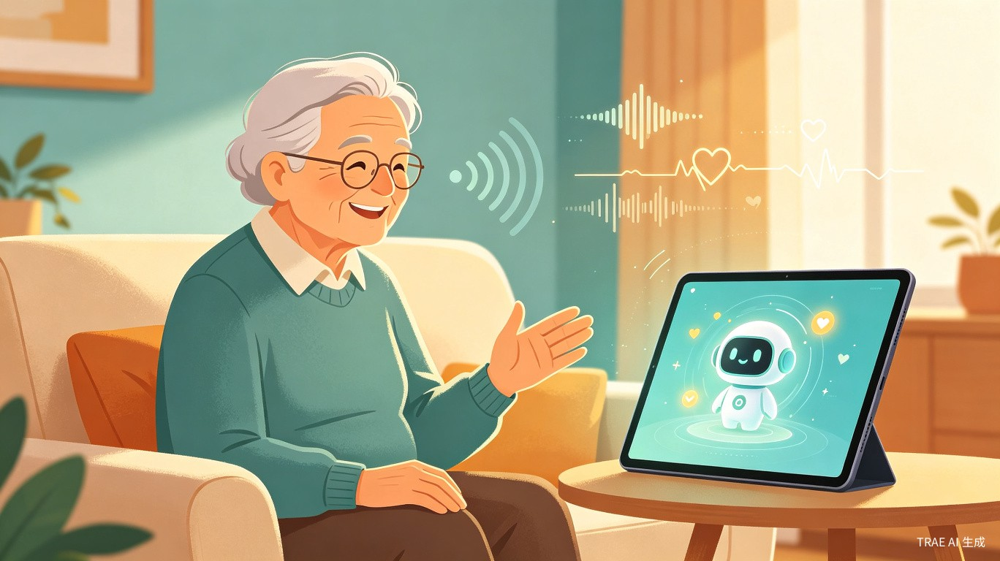
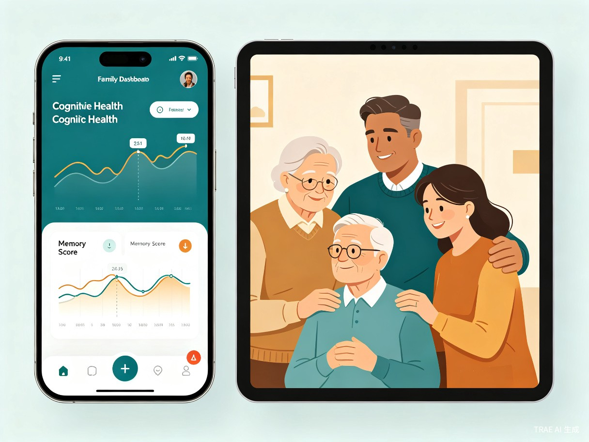

项目背景与市场洞察
中国正以前所未有的速度步入深度老龄化社会。截至2025年，60岁及以上人口已超过3.23亿，占总人口的25.1%[1]。伴随人口结构剧变，阿尔茨海默病及相关痴呆（ADRD）已成为"隐形的国民健康威胁"——《中国阿尔茨海默病报告2025》指出，中国ADRD病例数、死亡数和疾病负担均居全球首位，全球每四位患者中就有一位来自中国[2]。
认知障碍的早期发现至关重要。研究表明，从轻度认知障碍（MCI）进展到痴呆通常有3至5年的黄金干预期，但现实中大量患者因就诊意识薄弱、筛查手段匮乏而错失这一窗口。传统量表筛查（如MMSE、MoCA）需要专业人员在医院环境下执行，单次评估耗时长、覆盖面窄，准确率仅约75%[3]。而AI语音认知筛查技术已将早期信号识别准确率提升至91%以上[4]，为家庭场景下的持续监测提供了技术基础。
银发经济市场在2025年预计达到8.3万亿元规模[1]，其中健康管理、智能监护是增长最快的细分赛道。政策层面，国务院办公厅《关于发展银发经济增进老年人福祉的意见》明确提出支持老年健康技术产品创新，并在2026年底前建设100个认知障碍友好社区[5]。市场、技术、政策三重红利叠加，为"AI认知守护者"的诞生提供了充分的土壤。
产品定位与核心理念
一句话定位
AI认知守护者是一款面向中国家庭的智能认知健康伴侣产品，通过日常陪伴式语音交互与声纹分析技术，在居家场景中持续、无感地追踪老年人的认知功能变化，帮助子女和家庭更早发现认知衰退风险。
设计理念
陪伴优先，监测无感 — 产品首先是一个"会聊天的老伴"，其次才是一台"认知监测仪"。老人不会觉得自己在被"检查"，而是在和一位耐心的AI朋友拉家常。
声纹为镜，数据为证 — 不依赖主观问卷，而是通过声纹特征（语速、停顿频率、语调变化、词汇丰富度）的客观变化来捕捉认知信号，让早期预警有据可依。
家庭共情，守护有方 — 认知衰退不只是老人的事，更是整个家庭的事。产品连接老人端与子女端，让关爱跨越距离，让焦虑变成行动。
目标用户
| 用户角色 | 特征描述 | 核心诉求 |
|---|---|---|
| 老年人（60岁以上） | 独居或与配偶同住，日常社交较少，对智能手机操作不熟练 | 有人陪伴聊天、回忆往事、获得情感慰藉 |
| 成年子女（30-55岁） | 异地工作，无法每日陪伴父母，对父母认知健康存在隐性焦虑 | 远程了解父母认知状态，获得早期风险预警 |
| 社区/养老机构 | 管理数十至数百位老人，需要高效的批量认知筛查工具 | 降低筛查成本，提升服务覆盖率和专业度 |
核心功能模块
模块一：智能陪伴聊天
产品以语音对话为核心交互方式。AI会根据老人的兴趣、经历和当天话题主动发起聊天，内容涵盖回忆往事、讨论新闻、分享养生知识、讲笑话等。对话设计遵循"自然、温暖、有耐心"的原则，语速适中、语气亲切，让老人感受到被关注和尊重。
聊天并非闲聊——每次对话都在自然语言处理层面同步采集认知相关信号：词汇丰富度、语句连贯性、话题切换能力、记忆召回准确性等，为后续分析提供数据基础。
模块二：声纹认知分析引擎
声纹分析是产品的核心技术壁垒。系统不分析老人"说了什么"，而是捕捉"怎么说话"——语速的微妙变化、停顿频率的升高、语调起伏的减少、发音清晰度的下降，这些声学特征的变化往往是认知衰退的早期信号[4]。
分析引擎基于深度学习模型，融合声学特征提取、自然语言理解和时序变化检测三层架构。系统会建立每位老人的个人基线（首次使用后2至4周内完成校准），后续所有数据都与个人基线对比，而非与群体均值对比，从而实现高精度的个性化异常检测。
模块三：认知健康趋势追踪
系统将声纹分析结果与聊天内容分析结果融合，生成三维认知健康画像：
记忆力指标
追踪近期事件回忆、人名/地名准确率、重复叙述频率等，评估短期与长期记忆变化趋势。
表达能力指标
监测词汇丰富度、语句完整性、逻辑连贯性、找词困难频率等语言能力变化。
情绪状态指标
通过语调变化、话题偏好、互动积极性等维度评估情绪波动，识别抑郁或焦虑倾向。
模块四：家庭端健康看板
子女通过手机App查看父母的认知健康报告。看板以时间线形式呈现认知指标的变化趋势，用直观的颜色编码（绿色正常、黄色关注、红色预警）标识风险等级。当系统检测到认知指标的显著下降时，会主动推送预警通知，并附带具体的观察建议（如"本周张爷爷在回忆近期事件时出现3次混淆，建议关注"）。

模块五：记忆档案与家庭故事
每一次聊天记录都是一段珍贵的家庭记忆。产品会自动将老人讲述的人生故事、回忆片段整理成"记忆档案"，子女可以随时回顾父母讲述的往事，甚至生成音频摘要分享给其他家庭成员。这一功能不仅具有情感价值，也能在医疗场景下为医生提供老人认知状态的纵向参考数据。
技术架构
flowchart TB
A[语音输入
老人端设备] --> B[语音预处理
降噪/端点检测]
B --> C[声纹特征提取
MFCC/语速/语调/停顿]
B --> D[自然语言理解
语义/逻辑/记忆召回]
C --> E[认知分析引擎
深度学习模型]
D --> E
E --> F[个人基线对比
异常检测]
F --> G[认知健康画像
三维指标评分]
G --> H[家庭端App
趋势看板/预警通知]
G --> I[记忆档案
故事整理/音频摘要]
G --> J[医疗对接
医生参考报告]
style A fill:#2A8C82,color:#fff
style E fill:#D4874E,color:#fff
style H fill:#2A8C82,color:#fff
style I fill:#2A8C82,color:#fff
style J fill:#2A8C82,color:#fff
关键技术选型
| 技术层 | 方案 | 说明 |
|---|---|---|
| 语音交互 | ASR + TTS + LLM | 语音识别转文字，大语言模型生成自然回复，语音合成输出 |
| 声纹分析 | 深度声学模型 | 提取MFCC、基频、能量等声学特征，经CNN-LSTM模型分析认知相关变化 |
| 认知评估 | 多模态融合模型 | 融合声学特征与语言特征，建立个人基线，检测偏离趋势 |
| 数据安全 | 端到端加密 + 本地化 | 语音数据加密传输，支持本地部署，符合个人信息保护法 |
| 老人端设备 | 智能音箱/平板 | 低门槛语音交互，支持触屏辅助，适配主流智能硬件 |
竞争优势分析
| 对比维度 | 传统量表筛查 | 医院AI筛查 | AI认知守护者 |
|---|---|---|---|
| 筛查场景 | 医院/社区集中筛查 | 医院挂号就诊 | 居家日常陪伴 |
| 检测频率 | 每半年至一年一次 | 按需就诊 | 每日自然交互 |
| 老人参与门槛 | 需配合完成量表题目 | 需前往医院 | 日常聊天，零负担 |
| 准确率 | 约75% | 约91%-95% | 持续追踪，趋势更可靠 |
| 家庭参与度 | 低 | 低 | 高（子女实时看板） |
| 情感价值 | 无 | 无 | 陪伴 + 记忆档案 |
AI认知守护者的差异化在于：将认知筛查从"医疗行为"转化为"日常陪伴"，彻底降低了使用门槛和抗拒心理。同时，持续性的数据采集比单次筛查更能捕捉认知功能的渐进变化，为早期干预赢得宝贵时间。
商业模式与盈利路径
收入模式
家庭订阅
面向C端家庭用户，按月/年收取订阅费用。基础版含日常陪伴与基础认知报告，高级版含详细趋势分析、医生对接和记忆档案。
机构合作
面向养老院、社区日间照料中心等B端机构，提供批量部署方案和后台管理系统，按床位或服务人数收费。
数据服务
在合规前提下，为科研机构、药企提供脱敏认知健康数据，支持阿尔茨海默病早期干预研究。
定价策略建议
| 版本 | 目标用户 | 定价区间 | 核心权益 |
|---|---|---|---|
| 陪伴版 | 普通家庭 | 29元/月 | 每日AI聊天、基础认知月报 |
| 守护版 | 关注健康的家庭 | 69元/月 | 全部认知指标、实时预警、记忆档案 |
| 机构版 | 养老院/社区 | 按规模定制 | 批量管理、数据大屏、医生报告导出 |
实施路线图
第一阶段：产品验证（第1-6个月）
完成核心声纹分析模型训练，搭建MVP产品原型，与2至3家养老院合作开展封闭测试，收集至少500位老人的语音数据，验证模型准确率。
第二阶段：产品打磨（第7-12个月）
基于测试反馈优化AI对话体验，完善家庭端App功能，取得医疗器械软件备案，启动种子用户招募，目标覆盖1000个家庭。
第三阶段：市场拓展（第13-18个月）
正式上线家庭订阅服务，与省级养老服务平台建立合作，拓展机构客户，开展品牌传播，目标用户突破10000个家庭。
第四阶段：生态构建（第19-24个月）
对接医院认知门诊系统，打通"筛查-预警-就诊"闭环，引入第三方健康服务（如认知训练课程、营养方案），构建认知健康生态。
风险与应对
| 风险类型 | 具体风险 | 应对策略 |
|---|---|---|
| 技术风险 | 声纹模型在不同方言、年龄段的准确率差异 | 分阶段采集多方言数据，建立方言适配层；设置置信度阈值，低置信度结果不触发预警 |
| 隐私风险 | 老人语音数据涉及敏感个人信息 | 端到端加密、本地化部署选项、数据最小化采集、符合《个人信息保护法》要求 |
| 伦理风险 | 误报引发家庭恐慌，或漏报延误干预 | 明确产品定位为"辅助参考"而非"诊断工具"；所有预警标注置信度；建议用户就医确认 |
| 市场风险 | 老年群体对AI产品的接受度有限 | 以"陪伴"而非"监测"为切入点，降低心理抗拒；子女端驱动安装，老人端零操作门槛 |
愿景与展望
AI认知守护者的长期愿景，是让每一个中国家庭都能负担得起、愿意使用认知健康守护服务。我们相信，技术的温度不在于它能计算什么，而在于它能守护什么。
短期目标：覆盖10万家庭，帮助至少1000位老人在认知障碍早期获得干预机会。
中期目标：成为认知障碍友好社区的标准配置工具，与全国500家养老机构建立合作。
长期目标：构建中国最大的居家认知健康数据库，推动阿尔茨海默病早筛标准的建立，让"认知体检"像血压测量一样成为老年人的日常习惯。
每一位老人都值得被记住，每一段家庭记忆都值得被守护。AI认知守护者，用科技的力量，让爱与记忆同行。